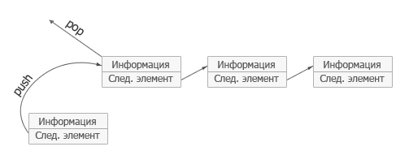
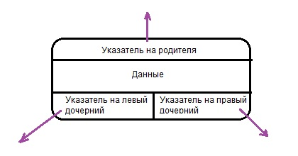
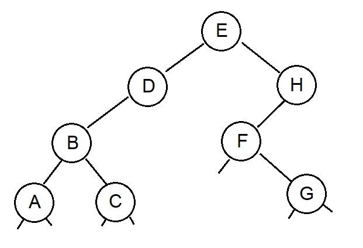
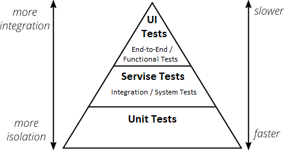
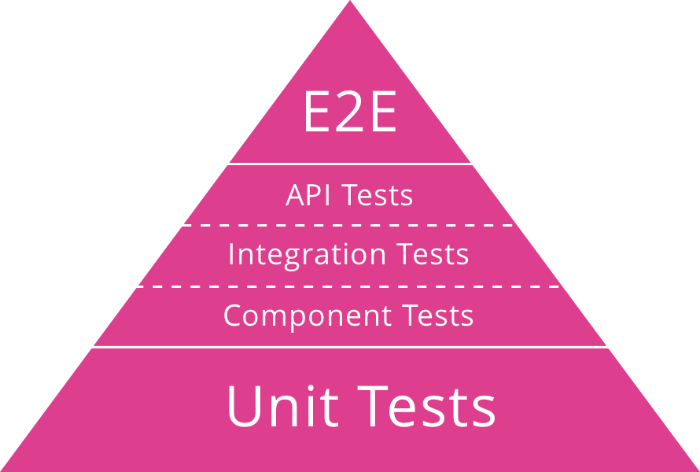
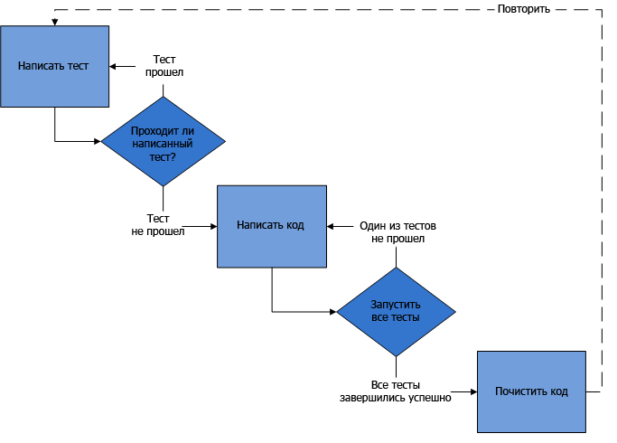

Парадигмы программирования
- Императивное (C, C++, Java)
- Декларативное (HTML, SQL)
- Структурное (Pascal, C)
- Функциональное (F#, Lisp, Erlang, Scala)
- Логическое
- Объектно-ориентированное (С#, Java)
- Аспектно-ориентированное
Императивное программирование
Императивное программирование В исходном коде программы записываются инструкции (команды), которые выполняются последовательно
- Именованные переменные
- Операторы присваивания
- Составные выражения
- Подпрограммы
- Описывает как решить задачу (явное указание всех шагов)
- Изменение состояния (переменных)
- При вызове одной и той же функции с одинаковыми параметрами, но на разных этапах выполнения алгоритма, можно получить разные данные на выходе из-за влияния на функцию состояния переменных
function double (arr) {
let results = []
for (let i = 0; i < arr.length; i++){
results.push(arr[i] * 2)
}
return results
}
Декларативное программирование
Декларативное программирование
- Хранение состояния (нет переменных и операторов присваивания)
- Описывает что должно быть сделано
- Неизменяемость
- Многие декларативные подходы имеют определённый слой императивных абстракций
- Код является контекстно-независимым - его можно использовать в любой программе без изменений
function double (arr) {
return arr.map((item) => item * 2)
}
Функциональное программирование
Функциональное программирование - последовательный вызов набора функций- Процесс вычисления трактуется как вычисление значений функций в математическом понимании
- Специфические возможности по работе с функциями: передача функций другим функциям в качестве аргументов и возврат функций из других функций
- Предполагает обходиться вычислением результатов функций от исходных данных и результатов других функций
- Описывает математические отношения между данными и целью
- Один из видов декларативного программрования
- Нужно что-то посчитать, но функция которая это считает возвращает не результат, а рецепт для вычисления результата, т.е. возвращает функцию, которая посчитает результат
- Методы для функционального программирования в JavaScript: arr.map, arr.forEach, arr.filter, arr.sort, arr.concat, arr.join, arr.reduce, arr.reduceRight, Object.assign, Object.keys()
- Хранение состояния (нет переменных и операторов присваивания)
- При вызове функции с одними и теми же аргументами мы всегда получим одинаковый результат: выходные данные зависят только от входных
- То, что в императивных языках делается путём присваивания значений переменным, в функциональных достигается путём передачи выражений в параметры функций
- Не нужно описывать шаги, нужно определить функцию, выполнить функции последовательно и в результате выполнения набор функций будет получен результат
- Разделение функций и данных
Чистые функции (pure functions) - функция, которая при одинаковых аргументах всегда возвращает одни и те же значения и не имеет видимых побочных эффектов (side effects) ввода-вывода и памяти. Зависят только от своих параметров и возвращают только свой результат. Не влияют на состояние программы- Детерменированная - для одного и того же набора входных значений возвращает одинаковый результат
- Без побочных эффектов В императивных языках некоторые функции в процессе выполнения своих вычислений могут модифицировать значения глобальных переменных, осуществлять операции ввода-вывода, реагировать на исключительные ситуации, вызывая их обработчики. Они называются функциями с побочными эффектами
- Для замены циклов в JS можно использовать map и reduce
Функции высшего порядка - функция принимающая в качестве аргументов другие функции или возвращающая другую функцию в качестве результатаФункции первого класса - функция трактуются как объект, то есть может быть передана другим функциям и ее можно вернуть из функций. Так же ее можно присваивать переменным let func = function(){}Каррирование функций - все функции могут быть от одного аргумента. Преобразование функции от пары аргументов в функцию, берущую свои аргументы по одномуРекурсия В функциональных языках цикл обычно реализуется в виде рекурсии. Рекурсивные функции вызывают сами себя, позволяя операции выполняться снова и сноваЛямбда-исчисление - механизм «анонимных функций» - callback-функций, которые можно определить прямо в том месте, где они используются, и которые имеют доступ к локальным переменным текущей функцииИммутабельность - свойство объектов не изменяться (н-р строка. строку нельзя поменять на месте, для изменения нужно создать новую строку). Принцип иммутабельности в ФП должен применяется для другими страктурами данных (списки, словари). Иммутабельный список - список в который нельзя добавить / удалить элемент, можно только итерироваться по ним. Можно создать новый список который содежит все элементы +1, при этом старый остается валаднымЗамыкания
-
Условия
Объектно-ориентированное программирование
Объектно-ориентированное программирование - методология программирования, основанная на представлении программы в виде совокупности объектов, каждый из которых является экземпляром определённого класса, а классы образуют иерархию наследования
Инкапсуляция - механизм языка, позволяющий ограничить доступ одних компонентов программы к другим. Группировка свойств и методов в один класс- Инкапсуляция – отделение и защита внутреннего интерфейса от внешнего
- Внутренний интерфейс – это свойства и методы, доступ к которым может быть осуществлен только из других методов объекта, их также называют «приватными»
- Внешний интерфейс – это свойства и методы, доступные снаружи объекта, их называют «публичными»
- Мы обращаемся с объектами как с единой сущностью, а не как с набором отдельных полей и методов, тем самым скрываем и защищаем реализацию класса. Если клиентский код не знает ничего, кроме публичного интерфейса, он не может зависеть от деталей реализации
Наследование - описание нового класса на основе уже существующего с частично или полностью заимствующейся функциональностью. Класс, от которого производится наследование, называется базовым, родительским или суперклассом. Новый класс — потомком, наследником, дочерним или производным классом- Наследование транзитивно: класс может наследоваться от другого класса, который наследуется от третьего, и так далее вплоть до базового класса (Object). Наследник может переопределить какие-то методы и поля чтобы изменить поведение по умолчанию
Полиморфизм - возможность объектов с одинаковой спецификацией иметь различную реализацию. «Один интерфейс, множество реализаций». Переопеределение методов у дочерних классов. Возможность единообразно обрабатывать объекты с различной реализацией при условии наличия общего интерфейсаАбстракция позволяет работать с объектами не вдаваясь в особенности их реализации- Инкапсуляция помогает реализовать абстракцию
- Абстракция это способ представления объекта в программе
- Абстракция - объекты из окружающиего мира которые мы хотим описать
Композиция
Композиция и Агрегация - расширение функционала класса за счет "внедрения" других классов- Об агрегировании также часто говорят как об «отношении принадлежности» по принципу «у машины есть корпус, колёса и двигатель»
Агрегация (агрегирование по ссылке) - отношение «часть-целое» между двумя равноправными объектами, когда один объект (контейнер) имеет ссылку на другой объект. Оба объекта могут существовать независимо: если контейнер будет уничтожен, то его содержимое - нетКомпозиция (агрегирование по значению) - более строгий вариант агрегирования, когда включаемый объект может существовать только как часть класса. Если класс будет уничтожен, то и включённый объект тоже будет уничтожен. Объект не может выйти за рамки своего класса. Объект будет создаваться внутри класса при создании класса и будет уничтожаться перед уничтожением родительского классаФункциональная композиция - передача результа вызова одной функции в качестве аргумента другой функции
- Агрегация:
профессора - факультеты , профессора остаются жить после разрушения факультета - Композиция:
университет - факультеты , факультеты без университета уничтожаются
Наследование и композиция
- Наследование - когда класс-наследник имеет все поля и методы родительского класса, и, как правило, добавляет какой-то новый функционал или/и поля
- Наследование предполагает принадлежность к какой-то общности (похожесть). Наследуются атрибуты, т.е. возможности, другого класса, при этом объектов непосредственно родительского класса не создается
- Минус наследования влияние родительского класса на дочерние
- Ассоциация (частные случаи: Композиция и Агрегация) – когда один класс включает в себя другой класс в качестве одного из полей
- Композиция предполагает формирование целого из частей. При композиции класс-агрегатор создает объекты других классов
Dependency Injection
function makeCoffee(coffee) {}
function produceCoffee() {
return { iCoffee:true }
}
function barista(makeCoffee, produceCoffee) {
let coffee = makeCoffee(produceCoffee());
}
barista(makeCoffee, produceCoffee);
Каррирование
Каррирование / Карринг (Currying) - в функциональном программирование - это преобразование функции с множеством аргументов в набор вложенных функций с одним аргументом. При вызове каррированной функции с передачей ей одного аргумента, она возвращает новую функцию, которая ожидает поступления следующего аргумента. Новые функции, ожидающие следующего аргумента, возвращаются при каждом вызове каррированной функции — до тех пор, пока функция не получит все необходимые ей аргументы. Ранее полученные аргументы, благодаря механизму замыканий, ждут того момента, когда функция получит всё, что ей нужно для выполнения вычислений. После получения последнего аргумента функция выполняет вычисления и возвращает результат.- При каррировании число вложенных функций равно числу аргументов исходной функции. Каждая из этих функций ожидает собственный аргумент. Если функция аргументов не принимает, или принимает лишь один аргумент, то каррировать её нельзя
Частичное применение функций (Partial Function Application) - функцию преобразуют в другую функцию, обладающую меньшим числом аргументов. Некоторые аргументы такой функции оказываются зафиксированными (для них задаются значения по умолчанию- Каррирование и преобразования функций реализуются в JavaScript благодаря замыканиям и тому, что функции в JS являются объектами первого класса (их можно передавать в качестве аргументов другим функциям, возвращать из них, присваивать переменным)
Каррирование
Пример 1
// исходная функция
function multiply(a, b, c) {
return a * b * c;
}
multiply(1,2,3); // 6
// каррирование
function multiply(a) {
return (b) => {
return (c) => {
return a * b * c
}
}
}
log(multiply(1)(2)(3)) // 6
//const mul1 = multiply(1);
//const mul2 = mul1(2);
//const result = mul2(3);
//log(result); // 6
Пример 2
function add(x){
return function() {
return x + y;
}
}
inc = add(1);
console.log(inc(15)); // 16
console.log(add(8)(7)); // 15
Частичное применение функций
function volume(l) {
return (w, h) => {
return l * w * h
}
}
// вариант использования 1
const hV = volume(70);
hV(203,142);
hV(220,122);
hV(120,123);
// вариант использования 2
volume(70)(90,30);
volume(70)(390,320);
volume(70)(940,340);
Частичная функция через bind
- Вызов bind позволяет фиксировать первые аргументы функции («каррировать» её), и таким образом из общей функции получить её «частные» варианты – чтобы использовать их многократно без повтора одних и тех же аргументов каждый раз
- Если в bind указаны аргументы - они будут прибавлены к каждому вызову новой функции, причем встанут перед теми, которые указаны при вызове
[Local] bind()
function mul(a, b) {
return a * b;
};
// double умножает только на два
var double = mul.bind(null, 2); // контекст фиксируем null, он не используется
console.log( double(3) ); // = mul(2, 3) = 6
console.log( double(4) ); // = mul(2, 4) = 8
console.log( double(5) ); // = mul(2, 5) = 10
- При вызове double будет передавать свои аргументы исходной функции mul после тех, которые указаны в bind, то есть в данном случае после зафиксированного первого аргумента 2
- "double" является «частичной функцией» (partial function) от mul
- При помощи bind мы можем получить из функции её «частный вариант» как самостоятельную функцию
DDD
Domain-Driven Design, DDD (Предметно-ориентированное проектирование) - набор принципов и схем, направленных на создание оптимальных систем объектов. Сводится к созданию программных абстракций, которые называются моделями предметных областей. В эти модели входит бизнес-логика, устанавливающая связь между реальными условиями области применения продукта и кодом- DDD - набор правил, которые позволяют принимать правильные проектные решения. Данный подход позволяет значительно ускорить процесс проектирования программного обеспечения в незнакомой предметной области
- Подход DDD особо полезен в ситуациях, когда разработчик не является специалистом в области разрабатываемого продукта. К примеру: программист не может знать все области, в которых требуется создать ПО, но с помощью правильного представления структуры, посредством проблемно-ориентированного подхода, может без труда спроектировать приложение, основываясь на ключевых моментах и знаниях рабочей области
- Приложение должно максимально рассказыать какую предметную область решаем
Определения
- Область (domain) - предметная область, к которой применяется разрабатываемое ПО
- Модель (model) - описывает отдельные аспекты области и может быть использована для решения проблемы
- Язык описания - используется для единого стиля описания домена и модели
CQRS
Command-Query Separation (CQS) или Command-Query Responsibility Segregation (CQRS) - принцип императивного программирования, который гласит, что метод должен быть либо командой, выполняющей какое-то действие, либо запросом, возвращающим данные, но не одновременно. Другими словами, задавание вопроса не должно менять ответ. Более формально, возвращать значение можно только чистым, не имеющим побочных эффектов методам. Следует отметить, что строгое соблюдение этого принципа делает невозможным отслеживание количества вызовов запросов
Event Sourcing
Event Sourcing - подход хранения данных, при котором вместо конечного результата (финальное состояние) храниться череда записей о событиях происшедших с некоторой сущностьюEvent Store - хранилище в котром запоминаем все действия пользователей в той очередности в которой они пришлиSnapshot - объединяет всю информацию до snapshot
Механизмы
- Каждому событию дается имя, которое определяет его значение, т.е. присутствует семантика. Есть огромная разница между «Событие 1» и «Корабль Отплыл»
- Нет ограничений на кол-во событий для сущности. Соответственно новые события могут отражать, как и новые виды совершенных действий, так и расширять уже существующие, скажем, добавили новое свойство в его 2-ой версии
- Произошедшие события неизменны («immutable»)
Методологии разработки
Методологии разработки
Методология разработки - организация труда, включающая идеологические принципы, план, контроль над процессами, подход к сотрудникам
- Waterfall - традиционный подход
- RUP (Rational Unified Process) - рациональный (итеративный подход). ПО выходит с уменьшенной функциональностью, чтобы занять нишу на рынке и противостоять конкурентам, после чего дорабатывается
- Agile - общая методология гибкой разработки
- Crystal Clear - подход с уравниванием разработчиков в коллективе. Каждая команда является набором людей с разным уровнем знаний, разными умениями и опытом
- Spiral - спиральный метод. Раннее выявление и уменьшение проектных рисков
- DSDM (Dynamic Systems Development Model) - динамическая модель. При планировании в самом начале невозможно понимать всех тонкостей разработки, поэтому весь процесс — исследовательская работа
- FDD (Feature Driven Development) - методология, рассматривающая будущие изменения. Процесс для обеспечения масштабируемости и повторяемости, при этом поощряющий творчество и инновации
- JAD (Joint Application Development) - ориентированный на пользователя подход. Максимальная занятость в разработке конечного пользователя
- RAD (Rapid Application Development) - модель быстрой разработки
- Scrum - концепция работы в условиях сорванных сроков и идеологического кризиса
- XP (Extreme Programming) - экстремальная разработка в динамической среде
- LD (Lean Development) - метод, предполагающий бережное отношение ко всем участникам процесса
Waterfall
Waterfall Model (каскадная модель) - модель процесса разработки программного обеспечения, в которой процесс разработки выглядит как поток, последовательно проходящий фазы.- Весь процесс является жестким и линейным, имеет четкие цели для каждого этапа, новая фаза начинается по завершению предыдущей, нет возврата назад
Шаги
- Требования - список требований к ПО. В первую очередь, анализируются требования и пожелания заказчика, затем это проецируется на возможности компании и состояние рынка. В результате получается некий документ, где описывается, что должно делать ПО, но не как и с помощью каких инструментов
- Проектирование - согласовывается логика работы ПО. Здесь всё ещё не принимаются конкретные решения по реализации, но уже описывается функционирование всех разделов приложения. На выходе разработчики уже представляют, сколько по времени и кадровому составу может занять проект. Создаются документы, подробно описывающие для программистов способ и план реализации указанных требований
- Конструирование (также «реализация» либо «кодирование») - речь идёт о конкретных инструментах для реализации идей: согласовываются требования к дизайну, языки программирования, уровни данных, сервисы и т. д. Формируется внешний облик готового продукта
- Воплощение - исполнительский этап, на который, как правило, приходится большая часть разработки. Если классическая модель допускает свободное взаимодействие с предыдущими этапами, то на практике допускается лишь внесение незначительных правок в «Конструирование»
- Тестирование и отладка (также «верификация»)
- Инсталляция
- Поддержка
Преимущества
- Устойчива к изменению кадрового состава Благодаря подробному документированию смена работников практически не влияет на сроки исполнения проекта
- Дисциплина Модель заставляет разработчиков, вовлечённых в проект быть дисциплинированными, оставаться в рамках намеченного плана. При необходимости в общей модели добавляется орган управления, ответственный за принятие решений, исполнители же обязаны работать в рамках системы
- Гибкость на ранних этапах Изменения в первых трёх фазах могут быть сделаны немедленно и с минимальными усилиями, поскольку они не подкреплены кодом
- Ориентация на сроки и финансы Благодаря тому, что каждый этап полностью очерчивает контур будущего ПО, все разработчики понимают свою роль, границы работы и сроки исполнения. Это позволяет оперировать реальными цифрами перед заказчиком
Недостатки
- Неадаптивная структура ПО На первых этапах модель водопада может быть гибкой, но если на фазе тестирования выявляются проблемы в общей структуре – это влечёт за собой последствия в виде сорванных сроков и даже отказов заказчика. Таким образом, возрастает роль руководителей и ответственных разработчиков, с уровнем компетентности которых в любой компании часто бывают проблемы
- Игнорирует конечного пользователя Чем ниже продвигается процесс в водопаде, тем меньше в нём роль заказчика. Внесение каких-либо изменений в функциональность ПО запускает всю цепочку этапов заново, поэтому продукты полученные по каскадной модели далеки от ориентации на массового пользователя
- Позднее тестирование Более гибкие методологии используют тестирование в качестве фундаментальной операции, происходящей непрерывно. Waterfall же допускает низкую квалификацию сотрудников на каждом этапе и плохое качество исполнения, ведь при запоздалом тестировании проблемы невозможно решить фундаментально
Итого
-
Каскадная методология – хорошее решение точки зрения сроков и отчётности, но очень слабое в плане качества. Поэтому сегодня её рекомендуется использовать только в трёх случаях:
- При ориентации ПО на заказчика, требующего прозрачность работ и исполнение в назначенные сроки
- При наличии в штате руководителей соответствующей квалификации
- При исполнении проекта, не имеющего конкуренции на рынке
Agile / Scrum / Kanban
Agile
Agile (agile software development) методология - семейство «гибких» подходов к разработке ПО, основынная на итеративном проходе по scope задач в условиях работы разных специалистов с целью выпуска работоспособного продукта- Agile предполагает, что при реализации проекта не нужно опираться только на заранее созданные подробные планы. Важно ориентироваться на постоянно меняющиеся условия внешней и внутренней среды и учитывать обратную связь от заказчиков и пользователей. Это поощряет разработчиков и инженеров экспериментировать и искать новые решения, не ограничивая себя жесткими рамками и стандартами
- К отдельным agile-подходам относятся scrum и kanban
Product Owner (PO) - Product Manager в терминологии ScrumProduct Manager - отвечает за продукт. Несет ответственность за рождение новых продуктов, их подготовленность к выходу на рынок, ценовые характеристики, его целевую аудиторию и прочие характеристикиProject Manager (PM) - отвечает за процесс. Координатор. Отвечает за соблюдение сроков и мониторинг всех зависимостей между командамиProgram Manager Product Lead / Product Director / Group Product Manager - начальник над несколькими PM. Отвечает за несколько продуктов одной ветки и определяет цели на более высоком уровне
Agile-манифест
- Люди и взаимодействие важнее процессов и инструментов
- Работающий продукт важнее исчерпывающей документации
- Сотрудничество с заказчиком важнее согласования условий контракта. Устные договоренности между сотрудниками, между заказчиком и исполнителем важнее всего, что отражено в планах, договорах и техническом задании
- Готовность к изменениям важнее следования первоначальному плану
[agilemanifesto] Принципы
Scrum
[YouTube] Agile и Scrum на пальцах
Scrum «подход структуры». Гибкая методология по разработке ПО. Команда из 5-9 разработчиков- Scrum-подход делит рабочий процесс на равные спринты – обычно это периоды от недели до месяца, в зависимости от проекта и команды. Перед спринтом формулируются задачи на данный спринт, в конце – обсуждаются результаты, а команда начинает новый спринт. Спринты очень удобно сравнивать между собой, что позволяет управлять эффективностью работы
- Принципы:
- не стремитесь сразу получить сложный продукт
- минимально жизнеспособный продукт можно показать пользователям и определить какие доработки нужны а какие нет - Плюсы:
- детальное задание необязательно
- разработка под контролем
- цена оказывается ниже ввиду рисков закладываемых подрядчиком в фиксированную стоимость
Команда
- Универсальная команда специалистов
Product Owner - Product Manager в терминологии Scrum. Соединяет команду с заказчиком. Человек, который управляет созданием продукта и отвечает за то, что получится в результатеScrum Master (бизнес-аналитик) - помогает Product Owner организовать бизнес-процесс: проводит общие собрания, решает бытовые проблемы, мотивирует команду и следит за соблюдением Scrum-подхода. Переводит задачи написанные обычным язвком в задачи понятные разработчикам по средствам Backlog
Backlog
Backlog - приоритезированный список задач, куда записываются пожелания заказчика. Создают Scrum Master и Product Owner- Эпик - большая часть функционала которая может быть завершена в рамках разработки (н-р: разработка личного кабинета пользователя). Эпики делятся на Сторисы
- Стори/Сторисы - более мелкая часть функционала которая еще не может случить для задач разработки (н-р: кабинет пользователя может состоять из функционала по авторизации, по рассылке уведомлений и т.д.). Сторис отвечает на вопрос "Я как пользователь хочу ... (н-р: иметь возможность делать посты)"
- Таски/Задачи - идут к разработчикам
Собрания
Planning Poker / Scrum Poker - разбиение Сторис на задачи и оценка сложности задач в Story PointsStory Points - оценивание с точки зрения сложности. Определяются эталонные задачи (кто за сколько врмени выполнял задачу). Отталкиваясь от эталонный оцениваются все остальные Сторис- У всех на собрании есть карты на которых выставолены числа, соответствующие кол-ву Story Points. Для более честной оценки все взакрытую при объявлении задачи выбирают свое количество Story Points и после показывают что поставили
- Сессия временной оценки задач. Назначаются ответственные за задачи. По итогу есть список задач который помещается в список TODO - задач на разработку. Задачи оцененные, приориетизированные, есть назначенные разработчики. После этого спринт считается запущенным
Daily Scrum Meeting/Stand-Up - 15 минут ежедневно проводятся встречи проектной команды, где контролируется ход работ. Каждый участник команды рассказывает про свой текущий статус: - Что делал вчера? - Что буду делать сегодня? - Какие проблемы есть?
Cпринт
- Спринт - участок времени за который разработчики выполняют фиксированый набор задач, оцененных на Planning Poker и на оценочной сессии. В конце спринта всегда должен быть работоспособный кусок продукта либо сам продукт, который можно показать заказчику
- Начало: после Planning Poker и Сессии оценки
- Длина спринтов одинаковая и обычно выбираются кратными неделям: 1,2,4 недели
- В рамках спринта задача меняется свои статусы. Изначально после оценки задчи попадают в статус TODO
- По итогу спринта - продукт который можно показать клиенту. Каждый разработчки презентует те задачи, которые он сделал. Заказчик видим конкретный результат, вносит коррективы
Доска
STORY / BACKLOG TODO # после оценкиREJECTED # от тестировщика в случае нахождения баговIN PROGRESS разработчик берет в разработкуREVIEW / TESTING / TO VERIFY # разработчик закончилDONE переводит тестировщик
- Разработчик берет задачу из REJECTED, переносит в IN PROGRESS и старается в приоритетном прядке ее закрыть <Когда все задачи, относящиеся к Сторис завершены, считается что Стирис закрыта>
Ретроспектива
- После review ретроспектива - собрание на которым команда отвечает на вопросы
- "Что было сделано хорошо в Спринте"
- "Что мы делали плохо в спринте"
- "Что нужно сделать чтобы в следующем спринте работать лучше" - Каждый в команде по очереди высказывается и предлагает варианты улучения процесса
- К концу ретроспективы список элементов на улучшение, который к концу следующего спринта смотрится и проверяется что улучшили, а что нет
- Оценивается эффуктивность команды. Берутся стори которые были закрыты и суммируются их Story Points. Если команда закрыра 30 Story Points, значит в следующем спринте можно запланировать 30 Story Points
Kanban
Kanban - «подход баланса». Гибкий метод управления проектами, целью которого является повышение производительности труда в командах- Главная идея Kanban - визуализация рабочего процесса. Она заключается в создании физической панели, на которой можно наглядно отмечать прогресс
- Задача – сбалансировать разных специалистов внутри команды и избежать ситуации, когда дизайнеры работают сутками, а разработчики жалуются на отсутствие новых задач
- Вся команда едина – в kanban нет ролей владельца продукта и scrum-мастера. Бизнес-процесс делится не на универсальные спринты, а на стадии выполнения конкретных задач: «Планируется», «Разрабатывается», «Тестируется», «Завершено» и др.
- Главный показатель эффективности в kanban – это среднее время прохождения задачи по доске. Задача прошла быстро – команда работала продуктивно и слаженно. Задача затянулась – надо думать, на каком этапе и почему возникли задержки и чью работу надо оптимизировать
- Для визуализации agile-подходов используют доски: физические и электронные. Они позволяют сделать рабочий процесс открытым и понятным для всех специалистов, что важно, когда у команды нет одного формального руководителя
- В основе концепции лежат «спринты»
Спринт - короткая итерация, строго ограниченная по времени (обычно 2−4 недели). В это время минимизируется длительность совещаний, но увеличивается их частота (они называются «схватками»). Благодаря этому контроль за выполнением становится более гибким, а разработчики быстрее реагируют на возникающие проблемы. Традиционное планирование отходит на второй план, его место занимает журнал спринтов
Эстимация
- Эстимация - оценки сроков и стоимости проекта
1. Экспертная оценка (Expert Judgement)
- Формирование оценки с привлечением экспертов в данной требуемой области
- Эксперты выдвигают свои предположения по поводу оценки (сроков или стоимости). После этого можно усреднить все предложения, а можно постараться прийти к единому решению в ходе дискуссии
2. Метод оценки по 3 точкам (Three Point Estimation)
- Сначала определяются оптимистичная (O = Optimistic), пессимистичная (P = Pessimistic) и реалистичная\средняя (M = Middle) оценки
- Значения P, M и O определяются экспертно (в часах, днях, $). Для этого задаются вопросы типа:
«сколько времени займет проект, если все пойдет хорошо?»,
«каким может быть самый негативный сценарий и сколько на него потребуется времени\усилий?» и т.д. - Далее полученные значения P, M и O подставляются в формулу: (O + 4 M + P) / 6
- Результат расчета дает усредненную оценку. Такая формула позволяет с одной стороны учесть возможные позитивные и негативные сценарии, а с другой – «сгладить» их влияние и получить более реальное значение оценки
3. Стоимость качества (Cost of Quality)
- Сначала оценивается время / бюджет только на разработку функционала, без учета ошибок и проблем, как если бы у нас сразу получалось идеальное ПО без дефектов. А далее оценивается сколько дополнительного времени и бюджета потребуется на работу с ошибками и проблемами в реальности, чтобы приблизить ПО к тому самому «идеальному» состоянию
- При оценке затрат на обеспечение качества ПО можно проанализировать и учесть такие области:
- расходы на активности по предотвращению дефектов
- стоимость тестирования
- исправление внутренних ошибок
- исправление внешних проблем по интеграции
- затраты на установку и настройку ПО с учетом реальной среды и данных
4. Оценка по аналогиям (Analogous Estimation)
- Можно опираться на прошлый опыт решения подобных задач или проектов
- Чтобы найти знакомые или похожие на предыдущий опыт задачи можно сделать декомпозицию
5. Оценка по параметрам и моделирование (Parametric Model)
- Один из самых точных и гибких методов оценки. Его суть в том, чтобы построить некую параметризированную модель-прогноз взяв за основу прошлый опыт, имеющиеся данные и метрики, статистику
- Фактически строится специальная математическая модель, которая позволяет отслеживать как меняется итоговая оценка в зависимости от исходных параметров
6. Оценка от частного к общему (Bottom-up Estimation)
- Метод похож на экспертную оценку, только в данном случае прогноз делается не для всего проекта в целом, а отдельно для составляющих его задач. Как это выглядит: мы собираем экспертное мнение, например, у специалистов по анализу, разработке, тестированию, поддержке ПО. Суммируем их оценки вместе, добавляем к ним затраты времени на взаимодействие и формируем общий прогноз
- Другими словами, мы собираем оценку по частям, узнавая сколько необходимо времени каждому из участников процесса разработки ПО и сводим все воедино с учетом дополнительных рисков
Принципы программирования
SOLID
SOLID (Single Responsibility, Open-Closed, Liskov Substitution, Interface Segregation, Dependency inversion) - пять основных принципов ООП- При создании программных систем использование принципов SOLID способствует созданию такой системы, которую будет легко поддерживать и расширять в течение долгого времени
- Цель принципов: способствуют изменениям; легко понимаемы; повторно используемы
Принципы
[S] SRP (The Single Responsibility Principle. Принцип единственной ответственности)- Каждый класс выполняет лишь одну задачу/ответственность
[O] OCP (The Open Closed Principle. Принцип открытости/закрытости)- Программные сущности (классы, модули, функции и т.д.) должны быть открыты для расширения, но закрыты для модификации
- От класса можно наследоваться и расширить его функциональность, но нет прямой возможности менять функциональность базового класса
[L] LSP (The Liskov Substitution Principle. Принцип подстановки Барбары Лисков)- Если гарантируется функциональность для базового класса, то гарантируется функциональность для всех его потомков (поведение программы не изменится)
- Поведение в методах-наследниках менять нельзя
- Наследующий класс должен дополнять, а не изменять базовый и не должен противоречить поведению, заданному базовым классом
[I] ISP (The Interface Segregation Principle. Принцип разделения интерфейса)- Абстракция (API или класс) должна быть сгруппирована в мелкие единицы и содержать только необходимые методы, давая возможность использовать только то, что необходимо. При необходимости разделить функциональность на несколько классов. При изменении методов интерфейса не должны меняться программные сущности, которые этот метод не используют
- Программные сущности не должны зависеть от методов, которые они не используют
[D] DIP (The Dependency Inversion Principle. Принцип инверсии зависимостей)- Зависимость кода должна строиться от абстракции, а не от класса
- Модули верхних уровней не должны зависеть от модулей нижних уровней. Оба типа модулей должны зависеть от абстракций
- Абстракции не должны зависеть от деталей. Детали должны зависеть от абстракций
- Зависимость на Абстракциях. Нет зависимости на что-то конкретное
Когда следует применять
- Жесткость - трудно вносить изменнея в код. Одно изменение вносит изменение в другие модули
- Хрупкость - свойство программы повреждаться во многих местах при внесении одного изменения
- Ненужная сложность - содержание элементов не используемых в данный момент
- Ненужные повторения - проблема дублирования кода
- Непрозрачность - трудность кода для понимания
DRY
DRY (Don’t Repeat Yourself. Не повторяйся) - нацелен на снижение повторения информации различного рода, особенно в системах со множеством слоёв абстрагирования- Формулируется как: «Каждая часть знания должна иметь единственное, непротиворечивое и авторитетное представление в рамках системы»
- Когда принцип DRY применяется успешно, изменение единственного элемента системы не требует внесения изменений в другие, логически не связанные элементы. Те элементы, которые логически связаны, изменяются предсказуемо и единообразно
- Нарушения принципа DRY называют WET - «Write Everything Twice» (Пиши всё по два раза) или «We enjoy typing» (Нам нравится печатать)
KISS
KISS («Keep it simple, stupid») - принцип утверждает, что большинство систем работают лучше всего, если они остаются простыми, а не усложняются- Принцип, запрещающий использование более сложных средств, чем необходимо
Принципы
- Разбивайте задачу на множество более маленьких задач, каждая задача должна решаться одним или парой классов
- Сохраняйте ваши классы/методы маленькими. Каждый метод должен состоять не более чем из 30-40 строк. Каждый метод должен решать одну маленькую задачу, а не множество случаев
YAGNI
YAGNI («You aren't gonna need it». «Вам это не понадобится») - процесс и принцип проектирования ПО, при котором в качестве основной цели и/или ценности декларируется отказ от избыточной функциональности, то есть отказ добавления функциональности, в которой нет непосредственной надобности
Последствия написание кода, который не нужно прямо сейчас
- Тратится время на добавление, тестирование и улучшение необходимой функциональности
- Новые функции должны быть отлажены, документированы и сопровождаться
- Новая функциональность ограничивает то, что может быть сделано в будущем, - ненужные новые функции могут впоследствии помешать добавить новые нужные
- Пока новые функции действительно не нужны, трудно полностью предугадать, что они должны делать, и протестировать их. Если новые функции тщательно не протестированы, они могут неправильно работать, когда впоследствии понадобятся
- Это приводит к тому, что программное обеспечение становится более сложным
Запахи кода (Code Smell)
Code Smell (Запахи кода) - код с признаками (запахами) проблем в системе- Запахи кода - ключевые признаки необходимости рефакторинга
- Запахи кода - это не набор чётких правил, а описание мест, на которые нужно обращать внимание при рефакторинге
Общие запахи объектно-ориентированного кода
Дублирование кода - использование одинаковых структур кода в нескольких местахДлинный метод Большой класс Длинный список параметров - использование объектов позволяет, в случае изменения передаваемых данных, модифицировать только сам объектРасходящиеся модификации - проблема возникает, когда при модификации в системе невозможно выделить определённое место, которое нужно изменитьСтрельба дробью - при выполнении любых модификаций приходится вносить множество мелких изменений в большое число классовЗавистливые функции - метод обращается к данным другого объекта чаще, чем к собственным даннымГруппы данных - группы данных, встречающихся совместно, нужно превращать в самостоятельный классОдержимость элементарными типами - Проблема связана с использованием элементарных типов вместо маленьких объектов для небольших задач, таких как валюта, диапазоны, специальные строки для телефонных номеров и т.д.Операторы типа switch - часто один и тот же блок switch оказывается разбросанным по разным местам программы. При добавлении в переключатель нового варианта приходится искать все эти блоки switch и модифицировать ихПараллельные иерархии наследования - всякий раз при порождении подкласса одного из классов приходится создавать подкласс другого классаЛенивый класс - класс, затраты на существование которого не окупаются выполняемыми им функциями, должен быть ликвидированТеоретическая общность - на определённом этапе существования программы обеспечивается набор механизмов, который, возможно, потребуется для некоторой будущей функциональности. Программу становится труднее понимать и сопровождатьВременное поле поле, которое нужно объекту только при определённых обстоятельствах. Такое положение вещей трудно для понимания, так как ожидается, что объекту нужны все его поляЦепочка вызовов появляется тогда, когда клиент запрашивает у одного объекта другой объект, другой объект запрашивает ещё один объект и т. д. Такие последовательности вызовов означают, что клиент связан с навигацией по структуре классов. Любые изменения промежуточных связей означают необходимость модификации клиентаПосредник - чрезмерное использование делегирования может привести к появлению классов, у которых большинство методов состоит только из вызова метода другого классаНеуместная близость возникает тогда, когда классы чаще, чем следовало бы, погружены в закрытые части друг другаАльтернативные классы с разными интерфейсами - два класса, в которых часть функциональности общая, но методы, реализующие её, имеют разные параметрыНеполнота библиотечного класса Библиотеки через некоторое время перестают удовлетворять требованиям пользователей. Естественное решение — поменять кое-что в библиотеках, но библиотечные классы не изменятьКлассы данных - это классы, которые содержат только поля и методы для доступа к ним, это просто контейнеры для данных, используемые другими классамиОтказ от наследства Если наследник использует лишь малую часть унаследованных методов и свойств родителя, это является признаком неправильной иерархииКомментарии Почувствовав потребность написать комментарий, попробуйте изменить структуру кода так, чтобы любые комментарии стали излишними
Рефакторинг
Рефакторинг (refactoring) - процесс изменения внутренней структуры программы, не затрагивающий её внешнего поведения и имеющий целью облегчить понимание её работы. В основе рефакторинга лежит последовательность небольших эквивалентных (то есть сохраняющих поведение) преобразований. Поскольку каждое преобразование маленькое, программисту легче проследить за его правильностью, и в то же время вся последовательность может привести к существенной перестройке программы и улучшению её согласованности и чёткости- Цель рефакторинга — сделать код программы более легким для понимания; без этого рефакторинг нельзя считать успешным
- Рефакторинг следует отличать от оптимизации производительности. Как и рефакторинг, оптимизация обычно не изменяет поведение программы, а только ускоряет её работу. Но оптимизация часто затрудняет понимание кода, что противоположно рефакторингу
- С другой стороны, нужно отличать рефакторинг от реинжиниринга, который осуществляется для расширения функциональности программного обеспечения. Как правило, крупные рефакторинги предваряют реинжиниринг
Причины применения рефакторинга
- Необходимо добавить новую функцию, которая недостаточно укладывается в принятое архитектурное решение
- Необходимо исправить ошибку, причины возникновения которой сразу не ясны
- Преодоление трудностей в командной разработке, которые обусловлены сложной логикой программы
Признаки плохого кода
- Дублирование кода
- Длинный метод
- Большой класс
- Длинный список параметров
- "Жадные" функции — это метод, который чрезмерно обращается к данным другого объекта
- Избыточные временные переменные
- Классы данных
- Несгруппированные данные
Методы рефакторинга
Изменение сигнатуры метода (change method signature) - добавление, изменение или удаление параметра метода. Изменив сигнатуру метода, необходимо скорректировать обращения к нему в коде всех клиентов. Это изменение может затронуть внешний интерфейс программы, кроме того, не всегда разработчику, изменяющему интерфейс, доступны все клиенты этого интерфейса, поэтому может потребоваться та или иная форма регистрации изменений интерфейса для последующей передачи их вместе с новой версией программыИнкапсуляция поля (encapsulate field) В случае, если у класса имеется открытое поле, необходимо сделать его закрытым и обеспечить методы доступа. После «Инкапсуляции поля» часто применяется «Перемещение метода»Выделение класса (extract class) Выделение интерфейса (extract interface) Выделение локальной переменной (extract local variable) Выделение метода (extract method) - выделение из длинного и/или требующего комментариев кода отдельных фрагментов и преобразовании их в отдельные методы, с подстановкой подходящих вызовов в местах использования. В этом случае действует правило: если фрагмент кода требует комментария о том, что он делает, то он должен быть выделен в отдельный метод. Также правило: один метод не должен занимать более чем один экран (25-50 строк, в зависимости от условий редактирования), в противном случае некоторые его фрагменты имеют самостоятельную ценность и подлежат выделению. Из анализа связей выделяемого фрагмента с окружающим контекстом делается вывод о перечне параметров нового метода и его локальных переменныхГенерализация типа (generalize type) Встраивание (inline) Введение фабрики (introduce factory) Введение параметра (introduce parameter) Подъём метода (pull up method) Спуск метода (push down method) Переименование метода (rename method) Перемещение метода (move method) применяется по отношению к методу, который чаще обращается к другому классу, чем к тому, в котором сам располагаетсяЗамена условного оператора полиморфизмом (replace conditional with polymorphism) Условный оператор с несколькими ветвями заменяется вызовом полиморфного метода некоторого базового класса, имеющего подклассы для каждой ветви исходного оператора. Выбор ветви осуществляется неявно, в зависимости от того, экземпляру какого из подклассов оказался адресован вызовЗамена наследования делегированием (replace inheritance with delegation) Замена кода типа подклассами (replace type code with subclasses)
Проблемы, возникающие при проведении рефакторинга
- Проблемы, связанные с базами данных
- Проблемы изменения интерфейсов
- Трудности при изменении дизайна
Средства автоматизации рефакторинга
-
Технические критерии для инструментов рефакторинга:
- Базы данных программы
- Деревья синтаксического разбора
- Точность Практические критерии для инструментов рефакторинга:
- Скорость
- Отмена модификаций
- Интеграция с другими инструментами
Стандарты кода
Google JavaScript Style Guide
Airbnb
idiomatic.js
Нетология
Стандарт оформления кода - набор правил и соглашений, используемых при написании исходного кода на некотором языке программирования- Смысл кода должен быть виден из самого кода, без необходимости изучать контекст
- Ограничение размера кода по горизонтали (чтобы помещался на экране) и вертикали (чтобы весь код файла держался в памяти), а также функции или метода в размер одного экрана
Инструменты
- Статические анализаторы JS кода. Избавляют от случайных ошиюок, помогают придерживаться единого корпоративного стиля кода
JSLint - первый статический анализатор. Один из самых строгих линтеровJSHint - более гибок, нежели JSLintESlint - гибко настраивается, а также может расширяться за счет плагиновGoogle Closure Compiler - он представляет собой не только программу для проверки, но и компилятор. Сообщает об ошибках в коде, и также создает минимизированные версии JS. Компилятор удаляет пустое пространство, комментарии и неиспользуемые переменные и упрощает длинные выражения, делая скрипт максимально компактным

Прочее
Виды веб приложений
SSR - Server-Side Rendering (рендеринг на стороне сервера)SPA - Single-Page Application (одностраничное приложение)PWA - Progressive Web App (прогрессивное веб-приложение)- Стандартные HTML страницы
Эволюция веб-дизайна
1990-2000 Нет дизайна
2000-2010 Скевоморфизм
2010-2013 Flat Design
2014-2017 Material Design
2018-.... Fluent Design
Фреймворки (особенности)
- структура приложения
- паттерны проектирования
- строгая структура (модульность) приложения
MVC MVP MVVM
- MVC (модель вид контроллер)
- MVP (модель вид представитель)
- MVVM (модель вид модель представления)
MVC
model - бизнес-логика (просчитывание данных, операций)
view - видимая часть
controller - берет данные из view и передает в model (запускает model)
Паттерны проектирования
Паттерны проектирования
Каталог паттернов проектирования
Паттерны проектирования в JavaScript
Шаблоны проектирования в JavaScript
Паттерн проектирования (design pattern) - это часто встречающееся решение определённой проблемы при проектировании архитектуры программ- В отличие от готовых функций или библиотек, паттерн нельзя просто взять и скопировать в программу. Паттерн представляет собой не какой-то конкретный код, а общую концепцию решения той или иной проблемы, которую нужно будет ещё подстроить под нужды программы
- Паттерны часто путают с алгоритмами, ведь оба понятия описывают типовые решения каких-то известных проблем. Но если алгоритм — это чёткий набор действий, то паттерн — это высокоуровневое описание решения, реализация которого может отличаться в двух разных программах
Классификация
Порождающие отвечают за удобное и безопасное создание новых объектов или даже целых семейств объектов без внесения в программу лишних зависимостейФабричный метод (Factory Method) Определяет общий интерфейс для создания объектов в суперклассе, позволяя подклассам изменять тип создаваемых объектовАбстрактная фабрика (Abstract Factory) Позволяет создавать семейства связанных объектов, не привязываясь к конкретным классам создаваемых объектов. Интерфейс, который группирует другие фабрики, логически связанные друг с другомСтроитель (Builder) Позволяет создавать сложные объекты пошагово. Строитель даёт возможность использовать один и тот же код строительства для получения разных представлений объектовПрототип (Prototype) Позволяет копировать объекты, не вдаваясь в подробности их реализацииОдиночка (Singleton) Гарантирует, что у класса есть только один экземпляр, и предоставляет к нему глобальную точку доступаСтруктурные отвечают за построение удобных в поддержке иерархий классов. Показывают различные способы построения связей между объектамиАдаптер (Adapter) Позволяет объектам с несовместимыми интерфейсами работать вместеМост (Bridge) Разделяет один или несколько классов на две отдельные иерархии - абстракцию и реализацию, позволяя изменять их независимо друг от другаКомпоновщик (Composite) Позволяет сгруппировать объекты в древовидную структуру, а затем работать с ними так, как будто это единичный объектДекоратор (Decorator) Позволяет динамически добавлять объектам новую функциональность, оборачивая их в полезные «обёртки»Фасад (Facade) Предоставляет простой интерфейс к сложной системе классов, библиотеке или фреймворкуЛегковес (Flyweight) Позволяет вместить бóльшее количество объектов в отведённую оперативную память. Легковес экономит память, разделяя общее состояние объектов между собой, вместо хранения одинаковых данных в каждом объектеЗаместитель (Proxy) Позволяет подставлять вместо реальных объектов специальные объекты-заменители. Эти объекты перехватывают вызовы к оригинальному объекту, позволяя сделать что-то до или после передачи вызова оригиналуПоведенческие решают задачи эффективного и безопасного взаимодействия между объектами программыЦепочка обязанностей (Chain of Responsibility) Позволяет передавать запросы последовательно по цепочке обработчиков. Каждый последующий обработчик решает, может ли он обработать запрос сам и стоит ли передавать запрос дальше по цепиКоманда (Command) Превращает запросы в объекты, позволяя передавать их как аргументы при вызове методов, ставить запросы в очередь, логировать их, а также поддерживать отмену операцийИтератор (Iterator) Даёт возможность последовательно обходить элементы составных объектов, не раскрывая их внутреннего представленияПосредник (Mediator) Позволяет уменьшить связанность множества классов между собой, благодаря перемещению этих связей в один класс-посредникСнимок (Memento) Позволяет делать снимки состояния объектов, не раскрывая подробностей их реализации. Затем снимки можно использовать, чтобы восстановить прошлое состояние объектовНаблюдатель (Observer) Создаёт механизм подписки, позволяющий одним объектам следить и реагировать на события, происходящие в других объектахСостояние (State) Позволяет объектам менять поведение в зависимости от своего состояния. Извне создаётся впечатление, что изменился класс объектаСтратегия (Strategy) Определяет семейство схожих алгоритмов и помещает каждый из них в собственный класс, после чего алгоритмы можно взаимозаменять прямо во время исполнения программыШаблонный метод (Template method) Определяет скелет алгоритма, перекладывая ответственность за некоторые его шаги на подклассы. Паттерн позволяет подклассам переопределять шаги алгоритма, не меняя его общей структурыПосетитель (Visitor) Позволяет создавать новые операции, не меняя классы объектов, над которыми эти операции могут выполняться
Зачем?
Проверенные решения Вы тратите меньше времени, используя готовые решения, вместо повторного изобретения велосипедаСтандартизация кода Вы делаете меньше просчётов при проектировании, используя типовые унифицированные решения, так как все скрытые проблемы в них уже давно найденыОбщий программистский словарь Вы произносите название паттерна, вместо того, чтобы час объяснять другим программистам, какой крутой дизайн вы придумали и какие классы для этого нужны
Паттерн «Простая фабрика»
«Простая фабрика» - производит нужный экземпляр, не утруждая клиента тонкостями этого процесса- Ненужно каждый раз создавать экземпляр класса
class WoodenDoor {
constructor(width, height){
this.width = width
this.height = height
}
getWidth(){
return this.width
}
getHeight(){
return this.height
}
}
const DoorFactory = {
makeDoor(width, height) {
return new WoodenDoor(width, height);
}
}
const door = DoorFactory.makeDoor(100, 200)
console.log('Width:', door.getWidth())
console.log('Height:', door.getHeight())
Паттерн «Синглтон»
«Синглтон» (Singleton) порождающий паттерн проектирования, гарантирующий что у класса есть только один экземпляр, и предоставляет к нему глобальную точку доступа в однопоточном приложении- В рамках применения этого паттерна новый экземпляр некоего класса создаётся в том случае, если он пока не создан. Если же экземпляр класса уже существует, то, при попытке обращения к конструктору, возвращается ссылка на соответствующий объект. Последующие вызовы конструктора всегда будут возвращать тот же самый объект
- Зачем: Использование конструктора плохая практика, особенно если у класса есть зависимости var user = new User()
Какие проблемы решает
Гарантирует наличие единственного экземпляра класса Чаще всего это полезно для доступа к какому-то общему ресурсу, например, базе данных. Такое поведение невозможно реализовать с помощью обычного конструктора, так как конструктор класса всегда возвращает новый объектПредоставляет глобальную точку доступа Это не просто глобальная переменная, через которую можно достучаться к определённому объекту. Глобальные переменные не защищены от записи, поэтому любой код может подменять их значения без вашего ведома
Представление класса в виде синглтона
Обычный класс a !== b
class usualClass {
constructor() {
// this.name = null;
}
testMethod() {
return 'Hello'
}
}
var a = new usualClass();
var b = new usualClass();
console.log(a === b); // false
console.log(a.testMethod());
Singleton ES5
const Universe = (function(){
let instance = null;
function func() {
if (!instance) {
instance = this;
this.size = 100;
}
return instance;
}
func.prototype.getSize = function() {
return this.size;
}
func.prototype.setSize = function(size) {
this.size = size;
}
return func;
})();
var a = new Universe();
var b = new Universe();
console.log(a === b); // true
console.log(a.getSize(), b.getSize()); // 100, 100
a.setSize(200);
console.log(a.getSize(), b.getSize()); // 200, 200
Singleton ES6
var instance = null;
class Singleton {
constructor() {
if(!instance){
instance = this;
}
return instance;
}
}
var a = new Singleton();
var b = new Singleton();
console.log(a === b); // true
Представление класса в виде объектного литерала
- Всякий раз, когда мы обращаемся к переменной user, мы получаем ссылку на один и тот же объект
const user = {
name: 'Tony',
greet: function() {
console.log('Hello!');
}
};
Паттерн «Декоратор»
«Декоратор» - структурный паттерн проектирования, который позволяет динамически добавлять объектам новую функциональность, оборачивая их в полезные «обёртки»- Расширения функционала объектов без модификации существующих классов или функций-конструкторов. Паттерн можно использовать для добавления к объектам неких возможностей без модификации кода, который ответственен за их создание
- Применяя «Декоратор», вы не меняете первоначальный класс и не создаёте дочерних классов
function Car(name) {
this.name = name;
this.color = 'White';
}
// создание нового объекта, который планируется декорировать
const tesla = new Car('Tesla Model 3');
// декорирование объекта - добавление нового функционала
tesla.setColor = function(color) {
this.color = color;
}
tesla.setPrice = function(price) {
this.price = price;
}
tesla.setColor('black');
tesla.setPrice(49000);
console.log(tesla.color); // выводит black
Паттерн «Строитель»
«Строитель» - порождающий паттерн проектирования, который позволяет создавать сложные объекты пошагово. Строитель даёт возможность использовать один и тот же код строительства для получения разных представлений объектов- Паттерн Строитель нужен, если объект может существовать в разных вариациях или процесс инстанцирования состоит из нескольких шагов
Пример гамбургера с разными компонентами
class BurgerBuilder {
constructor(size) {
this.size = size
}
addPepperoni() {
this.pepperoni = true
return this
}
addCheeze() {
this.cheeze = true
return this
}
build() {
return new Burger(this)
}
}
const burger = (new BurgerBuilder(14))
.addPepperoni()
.addCheeze()
Паттерн «Наблюдатель»
«Наблюдатель» - поведенческий паттерн проектирования, который создаёт механизм подписки, позволяющий одним объектам следить и реагировать на события, происходящие в других объектах- Основан на зависимости один ко многим: при изменении состояния одного объекта (Observer), все зависимые объекты (Observable) оповещаются об этом. Самое главное в общении этих двух объектов, что не нужна прямая связь между объектом и субъектом. Это позволяет добиться модульности клиентской части кода
- Observable (Издатели) - наблюдаемый объект. Содержит список [Observer] и если у него что-то происходит, всех оповещает в цикле. Когда в издателе будет происходить важное событие, он будет проходиться по списку подписчиков и оповещать их об этом, вызывая определённый метод объектов-подписчиков
- [Observer] (Подписчики) - наблюдатели (кучка объектов) за Observable
Паттерн «Модуль»
Модуль - прием, с помощью которого мы можем скрывать какие-то реализации. Самостоятельный фрагмент кода, который можно изменять, не затрагивая другой код проекта. Модули, кроме того, позволяют избегать такого явления, как загрязнение областей видимости, благодаря тому, что они создают отдельные области видимости для объявляемых в них переменных.- Модуль использует IIFE, замыкания и области видимости функций для имитации концепции инкапсуляции
Модуль при помощи замыканий – это оборачивание пакета функционала в единую внешнюю функцию, которая тут же выполняется- Все функции модуля будут иметь доступ к другим переменным и внутренним функциям этого же модуля через замыкание. Но снаружи программист, использующий модуль, может обращаться напрямую только к тем переменным и функциям, которые экспортированы. Благодаря этому будут скрыты внутренние аспекты реализации, которые нужны только разработчику модуля
- Недостаток приходится создавать публичные функции только для того, чтобы обращаться к приватным функциям и переменным
const myModule = (function() {
const privateVariable = 'Hello World';
function privateMethod() {
console.log(privateVariable);
}
return {
publicMethod: function() {
privateMethod();
}
}
})();
myModule.publicMethod(); // Выводит 'Hello World'
Паттерн «Фасад»
«Фасад» - структурный паттерн проектирования, который предоставляет простой интерфейс к сложной системе классов, библиотеке или фреймворку
var $ = function(target) {
return new MemeQuery(target);
}
function MemeQuery(target) {
this.target = document.querySelector(target);
}
MemeQuery.prototype.html = function(html) {
this.target.innerHTML = html;
return this;
}
$('#myParagraph').html('Meeemee').html('Some JS design patterns');
Паттерн «Открытый модуль»
Открытый модуль - в паттерне назначаем свойствам возвращаемого объекта приватные функции, которые хотим сделать общедоступными
-
Преимущества паттерна «Открытый модуль» перед паттерном «Модуль»
- «Открытый модуль» позволяет делать общедоступными скрытые сущности модуля (и снова скрывать их, если нужно), модифицируя, для каждой из них, лишь одну строку в объекте, возвращаемом после выполнения IIFE
- Возвращаемый объект не содержит определения функций. Всё, что находится справа от имён его свойств, определено в IIFE. Это способствует чистоте кода и упрощает его чтение
const myRevealingModule = (function() {
let privateVar = 'Peter';
const publicVar = 'Hello World';
function privateFunction() {
console.log('Name: '+ privateVar);
}
function publicSetName(name) {
privateVar = name;
}
function publicGetName() {
privateFunction();
}
return {
setName: publicSetName,
greeting: publicVar,
getName: publicGetName
};
})();
myRevealingModule.setName('Mark');
myRevealingModule.getName(); // Выводит Name: Mark
Алгоритмы и структуры данных
Big-O Notation (сложность алгоритмов)
[YouTube] Оценка сложности алгоритма
Big-O Notation показывает верхнюю границу сложности алгоритма зависимости между входными параметрами функции и количеством операций, которые выполнит процессор- Нельзя оценивать работу алгоритм с точки зрения времени. Один и тот же алгоритм на разных машинах будет выполняться разное время. Алгоритм включает в себя число шагов. Идея Big-O - сколько шагов нужно сделать чтобы алгоритм завершил свое выполнение
Сложность алгоритма (вычислительная сложность) - функция зависимости объёма работы, которая выполняется некоторым алгоритмом, от размера входных данных- Объём работы обычно измеряется временем и вычислительными ресурсами. Время определяется количеством элементарных шагов, необходимых для решения задачи. Ресурсы определяются объёмом памяти или места на носителе данных
Верхняя граница (отбрасывание констант)
- Мы говорим как будет вести себя алгоритм на бесконечности
- Если алгоритм для n-элементов выполняет n-тактов плюс один такт для вывода информацим на экран, то сложность такого алгоритма всё равно O(N), т.к. бесконечность гораздо больше единицы. Тоже самое касается алгоритмов, которые выполняются за O(2N) или более
- Big-O описывает только скорость роста. Поэтому мы отбрасываем константы при оценке сложности
- Алгоритм, описываемый как O(2N) должен описываться как O(N)
O(формула_поведения_алгоритма)
O(0) # ничего не происходит
O(1) # постоянная величина (н-р: размер файлов не зависит на скорость передачи данных если они доставляются на самолете)
O(N) # зависимость прямо пропорциональна (линейная) и зависит от количества передаваемых бит (н-р: чем больше файлов, тем дольше их передавать по сети)
O(N + N) = O(N) # последователность действий - сложение
O(N * N) = O(N2) # вложенные действия - умножение
Быстродействие
Рекурсия => Быстродействие: O(N)
function pow(x, n) {
if (n != 1) {
return x * pow(x, n - 1);
} else {
return x;
}
}
Сложение чисел => Быстродействие: O(1)
function sum(a, b) {
return a + b;
}
Быстродействие: O(N)
let min = 1;
let max = 10;
for(let i=0; i<=100; i++) {
if (i < min) min = i;
if (i > max) max = i;
}
let min = 1;
let max = 10;
for(let i=0; i<=100; i++) {
if (i < min) min = i;
}
for(let i=0; i<=100; i++) {
if (i > max) max = i;
}
Сложение и умножение
Быстродействие: O(A + B)
let arrA = [1,2,3];
let arrB = [1,2,3];
for(let i=0; i<=arrA; i++) {
console.log(i);
}
for(let i=0; i<=arrB; i++) {
console.log(i);
}
// Проход по массивам выполняется последовательно
// Выполнение первого цикла не зависит от выполнения второго
// A - длина массива arrA
// B - длина массива arrB
Быстродействие: O(A * B)
let arrA = [1,2,3];
let arrB = [1,2,3];
for(let a=0; a<=arrA; a++) {
for(let b=0; b<=arrB; b++) {
console.log(a, b);
}
}
// Выполнить что-то N раз, пока делаешь что-то свое
// Цикл по "B" зависим от цикла по "A"
Структуры данных
Структуры данных - способы хранить и организовывать множество однотипных и/или логически связанных данных- Структуры данных позволяют производить 4 основных типа действий: доступ, поиск, вставку и удаление
List (Список)
List (Список) - представление пронумерованной последовательности значений, где одно и то же значение может присутствовать сколько угодно раз- Обычный список позволяет очень быстро получить доступ к памяти, поскольку вы уже знаете нужный адрес
- У списков есть порядковые номера, поэтому можно вставлять значения в начало, середину и конец
- Списки отлично справляются с быстрым доступом к элементам в своём конце и работой с ними. Однако, для элементов из начала или середины они не слишком хороши, так как приходится вручную обрабатывать адреса памяти
Push (добавить в конец), Pop (удалить из конца) O(1)
# являются простыми операциями, поскольку не затрагивают весь остальной список
Unshift (добавить в начало) O(N)
# чтобы добавить новый элемент в начало списка, нужно освободить пространство для этого значения,
# сдвинув на один все последующие значения
[a, b, c, d, e]
0 1 2 3 4
⬊ ⬊ ⬊ ⬊ ⬊
1 2 3 4 5
[x, a, b, c, d, e]
Shift (удалить из начала) O(N)
# удаляем первое значение и затем сдвигаем каждый элемент списка на предшествующий адрес
[x, a, b, c, d, e]
1 2 3 4 5
⬋ ⬋ ⬋ ⬋ ⬋
0 1 2 3 4
[a, b, c, d, e]
Stack (Стек)
Stack (Стек) - абстрактный тип данных, представляющий собой список элементов, организованных по принципу LIFO (англ. last in — first out, «последним пришёл — первым вышел»)- Зачастую стек реализуется в виде однонаправленного списка (каждый элемент в списке содержит помимо хранимой информации в стеке указатель на следующий элемент стека). Но также часто стек располагается в одномерном массиве с упорядоченными адресами
- Операции: добавление элемента (push), удаление (pop), чтение головного элемента (peek)
- push добавляется новый элемент, указывающий на элемент, бывший до этого головой. Новый элемент теперь становится головным
- pop убирается первый, а головным становится тот, на который был указатель у этого объекта (следующий элемент). При этом значение убранного элемента возвращается


- Организация стека в виде одномерного упорядоченного по адресам массива. push и pop
Queue (Очередь)
Queue (Очередь) - абстрактный тип данных с доступом к элементам «первый пришёл — первый вышел» (FIFO, англ. first in, first out)- Добавление элемента (enqueue — поставить в очередь) возможно лишь в конец очереди, выборка - только из начала очереди (dequeue - убрать из очереди), при этом выбранный элемент из очереди удаляется
Дерево
[YouTube] Алгоритмы и структуры данных. Деревья
Деревья - эмулирует древовидную структуру в виде набора связанных узлов (вершин) и ребер- Дерево должно начинаться с единственного родителя, «корня» дерева
- Дерево считается ориентированным, если в корень не заходит ни одно ребро
- Определяющее свойство дерева - существование только одного пути, соединяющего любые два узла
Определения
- Вершина (узел) - простой объект
- Ребро - связь между двумя верщинами
- Путь в дереве - список отдельных вершин, в котором следующие друг за другом вершины соединяются ребрами дерева
- Корневой узел - самый верхний узел дерева (узел 8 на примере)
- Корень - одна из вершин, по желанию наблюдателя
- Лист, листовой или терминальный узел - узел, не имеющий дочерних элементов (узлы 1, 4, 7, 13)
- Внутренний узел - любой узел дерева, имеющий потомков, и таким образом, не являющийся листовым узлом (3, 6, 10, 14)

Представление дерева
Общие операции
- Вставка нового элемента в определённую позицию
- Вставка поддерева
- Добавление ветви дерева
- Нахождение корневого элемента для любого узла
- Нахождение наименьшего общего предка двух вершин
- Перебор всех элементов дерева
- Перебор элементов ветви дерева
- Поиск изоморфного поддерева
- Поиск элемента;
- Удаление ветви дерева
- Удаление поддерева
- Удаление элемента
Обход дерева
Обход двоичного дерева в глубину (DFS - Depth First Search)
- Используется стек
- Обработка узла поддерева
- Рекурсивный обход левого поддерева
- Рекурсивный обход правого поддерева
-
Прямой обход (сверху-вниз, pre-order)
- вначале обрабатывается узел, затем посещается левое и правое поддерево
E, D, B, A, C, H, F, G
-
Обратный обход (снизу вверх, post-order)
- вначале посещается левое и правое поддерево, затем обрабатывается узел
A, C, B, D, G, F, H, E
-
Поперечный обход (слева-направо, in-order)
- вначале посещается левое поддерево, затем узел и правое поддерево
A, B, C, D, E, F, G, H
Обход двоичного дерева в ширину (BFS - Breadth First Search)
- Используется очередь, содержащая вершины, требующие просмотра
- Выполняется по слоям начиная от корня
-
За одну итерацию алгоритма:
- если очередь не пуста, извлекается вершина из очереди
- обрабатывается извлеченная вершина
- в очередь помещаются все дочерние
E, D, H, B, F, A, C, G
Куча
Куча - специализированная структура данных типа дерево, которая удовлетворяет свойству кучи: если B является узлом-потомком узла A, то ключ(A) ≥ ключ(B). Из этого следует, что элемент с наибольшим ключом всегда является корневым узлом кучи, поэтому иногда такие кучи называют max-кучами (в качестве альтернативы, если сравнение перевернуть, то наименьший элемент будет всегда корневым узлом, такие кучи называют min-кучами)- Реализация: массив
Операции
- Найти максимум или найти минимум: найти максимальный элемент в max-куче или минимальный элемент в min-куче, соответственно
- Удалить максимум или удалить минимум: удалить корневой узел в max- или min-куче, соответственно
- Увеличить ключ или уменьшить ключ: обновить ключ в max- или min-куче, соответственно
- Добавить: добавление нового ключа в кучу
- Слияние: соединение двух куч с целью создания новой кучи, содержащей все элементы обеих исходных
Хеш-таблица
Хеш-таблица - это структура данных, реализующая интерфейс ассоциативного массива, а именно, она позволяет хранить пары (ключ, значение) и выполнять три операции: операцию добавления новой пары, операцию поиска и операцию удаления пары по ключу
Граф
Граф - есть множество «вершин» (A, B, C, D, ...), связанных линиями
Алгоритмы сотрировки
Сортировка
- Пузырьковая сортировка
- Сортировка выбором
- Сортировка вставками
- Быстрая сортировка
Метод sort
arr.sort(function(a, b){
if(a < b) {
return 1;
} else {
return -1
}
});
Пузырьковая сортировка
- Суть: сравнение соседних элементов и их обмене, если они находятся не в надлежащем порядке. Неоднократно выполняя это действие, мы заставляем наибольший элемент "всплывать" к концу массива. Следующий проход приведет к всплыванию второго наибольшего элемента, и так до тех пор, пока после n-1 итерации массив не будет полностью отсортирован
- Плюс: простая реализация
- Минусы: эффективен он лишь для небольших массивов
- Сложность: O(N2)
function BubbleSort(A){
var n = A.length;
for (var i = 0; i < n-1; i++) {
for (var j = 0; j < n-1-i; j++) {
if (A[j+1] < A[j]) {
var t = A[j+1]; A[j+1] = A[j]; A[j] = t;
}
}
}
return A;
}
Сортировка выбором
- Суть: начинается с поиска наименьшего элемента в списке и обмена его с первым элементом (таким образом, наименьший элемент помещается в окончательную позицию в отсортированном массиве). Затем мы сканируем массив, начиная со второго элемента, в поисках наименьшего среди оставшихся n-1 элементов и обмениваем найденный наименьший элемент со вторым, т.е. помещаем второй наименьший элемент в окончательную позицию в отсортированном массиве. В общем случае, при i-ом проходе по списку (0<=i<=n-2) алгоритм ищет наименьший элемент среди последних n-i элементов и обменивает его с A[i]. После выполнения n-1 проходов список оказывается отсортирован
function SelectionSort(A) {
var n = A.length;
for (var i = 0; i < n - 1; i++) {
var min = i;
for (var j = i + 1; j < n; j++) {
if (A[j] < A[min]) min = j;
}
var t = A[min];
A[min] = A[i];
A[i] = t;
}
return A;
}
Сортировка вставками
- Суть: На каждом шаге алгоритма сортировки встаками выбирается один из элементов входного массива и вставляется на нужную позицию в уже отсортированном массиве, до тех пор, пока входных элементы не будут исчерпана. Метод выбора очередного элемента из исходного массива произволен; может использоваться практически любой алгоритм выбора
function InsertionSort(A) {
var n = A.length;
for (var i = 0; i < n; i++) {
var v = A[i],
j = i - 1;
while (j >= 0 && A[j] > v) {
A[j + 1] = A[j];
j--;
}
A[j + 1] = v;
}
return A;
}
Быстрая сортировка
function QuickSort(A) {
if (A.length == 0) return [];
var a = [],
b = [],
p = A[0];
for (var i = 1; i < A.length; i++) {
if (A[i] < p) a[a.length] = A[i];
else b[b.length] = A[i];
}
return QuickSort(a).concat(p, QuickSort(b));
}
Тестирование
Тестирование
Тестирование ПО - процесс исследования, испытания программного продукта, имеющий своей целью проверку соответствия между реальным поведением программы и её ожидаемым поведением на конечном наборе тестов, выбранных определенным образомТестовые сценарии используются на разных уровнях: как в компонентном, так и в интеграционном и системном тестировании. Тестовые сценарии, как правило, пишутся для проверки компонентов, в которых наиболее высока вероятность появления ошибокПокрытие кода показывает процент исходного кода программы, который был выполнен («покрыт») в процессе тестирования. По способам измерения выделяют покрытие операторов, покрытие условий, покрытие путей, покрытие функций и др.
Уровни тестирования
Тестирование компонентов - тестируется минимально возможный для тестирования компонент, например, отдельный класс или функция. Часто тестирование компонентов осуществляется разработчиками программного обеспеченияИнтеграционное тестирование - тестируются интерфейсы между компонентами, подсистемами или системами. При наличии резерва времени на данной стадии тестирование ведётся итерационно, с постепенным подключением последующих подсистемСистемное тестирование - тестируется интегрированная система на её соответствие требованиямАльфа-тестирование имитация реальной работы с системой. Чаще всего альфа-тестирование проводится на ранней стадии разработки продукта, но в некоторых случаях может применяться для законченного продукта в качестве внутреннего приёмочного тестирования. Иногда альфа-тестирование выполняется под отладчиком или с использованием окружения, которое помогает быстро выявлять найденные ошибки. Обнаруженные ошибки могут быть переданы тестировщикам для дополнительного исследования в окружении, подобном тому, в котором будет использоваться программаБета-тестирование в некоторых случаях выполняется распространение предварительной версии (в случае проприетарного программного обеспечения иногда с ограничениями по функциональности или времени работы) для некоторой большей группы лиц с тем, чтобы убедиться, что продукт содержит достаточно мало ошибок. Иногда бета-тестирование выполняется для того, чтобы получить обратную связь о продукте от его будущих пользователей
Виды тестирования
Статическое тестирование программный код не выполняется - анализ программы происходит на основе исходного кода, который вычитывается вручную, либо анализируется специальными инструментамиДинамическое тестирование - код исполняетсяТестирование «белого ящика» - разработчик теста имеет доступ к исходному коду программ и может писать код, который связан с библиотеками тестируемого программного обеспечения. Это типично для компонентного тестирования, при котором тестируются только отдельные части системы. Оно обеспечивает то, что компоненты конструкции работоспособны и устойчивы, до определённой степениТестирование «чёрного ящика» - тестировщик имеет доступ к программе только через те же интерфейсы, что и заказчик или пользователь, либо через внешние интерфейсы, позволяющие другому компьютеру либо другому процессу подключиться к системе для тестирования. Например, тестирующий компонент может виртуально нажимать клавиши или кнопки мыши в тестируемой программе с помощью механизма взаимодействия процессовТестирование «серого ящика» - разработчик теста имеет доступ к исходному коду, но при непосредственном выполнении тестов доступ к коду, как правило, не требуетсяРегрессионное тестирование - после внесения изменений в очередную версию программы, регрессионные тесты подтверждают, что сделанные изменения не повлияли на работоспособность остальной функциональности приложения. Регрессионное тестирование может выполняться как вручную, так и средствами автоматизации тестирования
Пирамида тестирования


1. Unit Testing
2. Integration Testing
3. System Testing
4. E2E Testing
- Нижняя часть — это самые быстрые, простые и самые изолированные тесты, а верхние — самые дорогие, самые медленные и охватывают всё приложение в целом
-
Google часто предлагает разделение
- 70% unit тестов
- 20% интеграционных тестов
- 10% E2E тестов
- Модульные тесты реализовывать быстрее, чем GUI тесты (время на разработку меньше). Модульные тесты отрабатывают быстрее, чем GUI
- Модульные тесты дешевле, чем GUI тесты (однако, стремясь к вершине пирамиды, мы получаем большую уверенность в том, что все работает как ожидалось)
- Тестирование должно быть разносторонним, но соотношение тестов должно быть таково, что модульных количественно больше, чем GUI. Системные тесты занимают середину
Виды тестирования по степени изолированности кода
Блочное (Unit testing) - тестирование одного модуля в изоляцииИнтеграционное (Integration Testing) - тестирование группы взаимодействующих модулейСистемное (System Testing) - тестирование системы в целом. Для небольших проектов это, как правило, ручное тестирование - запустил, пощелкал, убедился, что (не) работает. Можно автоматизировать. К автоматизации есть два подхода- Использовать вариацию MVC паттерна - Passive View и формализовать взаимодействие пользователя с GUI в коде. Тогда системное тестирование сводится к тестированию Presenter классов, а также логики переходов между View
- Использовать специальные инструменты для записи действий пользователя. То есть в итоге запускается сама программа, но щелканье по кнопкам осуществляется автоматически
Принципы
- Писать тесты разной детализации
- Чем выше уровень, тем меньше тестов
Юнит-тесты
Юнит-тесты позволяет проверить на корректность отдельные модули исходного кода программы (функции, методы и классы) в изоляции от остальной программы (а всё остальное имитируется/заменяется). Они должны быть написаны на том же языке, что и тестируемый продукт и храниться в том же репозитории. Обычно пишутся разработчиками. Они часто прогоняются как часть сборки, чтобы сразу же увидеть успешно ли завершается тест или нет- Тест является спецификацией метода класса, контрактом: какие входные параметры ожидает этот метод, и что остальные компоненты системы ждут от него на выходе
- Тесты белого ящика
- Цель: изолировать отдельные части программы и показать, что по отдельности эти части работоспособны
- Идея: писать тесты для каждой нетривиальной функции или метода. Это позволяет достаточно быстро проверить, не привело ли очередное изменение кода к регрессии, то есть к появлению ошибок в уже оттестированных местах программы, а также облегчает обнаружение и устранение таких ошибок
Преимущества
- Поощрение изменений. Поощряет программистов к изменениям кода, поскольку достаточно легко проверить, что код работает и после изменений
- Упрощение интеграции. Может быть использовано для подхода к тестированию «снизу вверх»: сначала тестируя отдельные части программы, а затем программу в целом
- Документирование кода. Можно рассматривать как «живой документ» для тестируемого класса
- Отделение интерфейса от реализации. Поскольку некоторые классы могут использовать другие классы, тестирование отдельного класса часто распространяется на связанные с ним. Например, класс пользуется базой данных; в ходе написания теста программист обнаруживает, что тесту приходится взаимодействовать с базой. Это ошибка, поскольку тест не должен выходить за границу класса. В результате разработчик абстрагируется от соединения с базой данных и реализует этот интерфейс, используя свой собственный mock-объект. Это приводит к менее связанному коду, минимизируя зависимости в системе
Mock-объект (mock object «объект-имитация») - в ООП тип объектов, реализующих заданные аспекты моделируемого программного окружения. Mock-объект представляет собой конкретную фиктивную реализацию интерфейса, предназначенную исключительно для тестирования взаимодействия и относительно которого высказывается утверждение
Когда не работает
- Сложный код
- Результат известен лишь приблизительно
- Код, взаимодействующий с системой. Код, взаимодействующий с портами, таймерами и прочими «нестабильными» частями системы, крайне сложно проверить в изолированном окружении
- Ошибки интеграции и производительности. При выполнении юнит-тестов происходит тестирование каждого из модулей по отдельности. Это означает, что ошибки интеграции, системного уровня, функций, исполняемых в нескольких модулях, не будут определены
- При общей низкой культуре программирования. Для получения выгоды от модульного тестирования требуется строго следовать технологии тестирования на всём протяжении процесса разработки программного обеспечения. Нужно хранить не только записи обо всех проведённых тестах, но и обо всех изменениях исходного кода во всех модулях. С этой целью следует использовать систему контроля версий ПО. Таким
- Проблемы с объектами-заглушками
Библиотеки для JavaScript
- Mocha (тестовый фреймворк)
- Jest
- Chai («assertion library», используется совместно с тестовым framework’ом)
- Sinon.JS (библиотека для создания mock’ов, stub’ов, spy’ев, используется совместно с тестовым framework’ом)
- Karma runner (от создателей Angular.JS, «test runner» — организует среду выполнения тестов)
- QUnit (от создателей jQuery)
- JsUnit (больше не поддерживается создателями)
- Jasmine (рекомендован создателями jsUnit)
- D.O.H
Интеграционные тесты
Интеграционные тесты (сервисные / компонентные тесты) на соответствие требований проверяется интеграция модулей/компонентов, их взаимодействие между собой, а также интеграция подсистем в одну общую систему. Это может быть набор классов/методов/функций, модуль, подсистема или даже само приложение. Для интеграционного тестирования используются компоненты, уже проверенные с помощью модульного тестирования, которые группируются в множества. Данные множества проверяются в соответствии с планом тестирования, составленным для них, а объединяются они через свои интерфейсы. Так как модули соединяются между собой с помощью предусмотренных реализацией интерфейсов и в процессе тестирования у нас нет потребности рассматривать внутреннюю структуру компонентов- Тесты черного ящика
- Цель: проверка соответствия проектируемых единиц функциональным, приёмным и требованиям надежности
- Для автоматизации интеграционного тестирования применяются системы непрерывной интеграции. Автоматические интеграционные тесты выполняются сразу же после внесения изменений, что позволяет обнаруживать и устранять ошибки в короткие сроки
Подходы
- Снизу вверх (Bottom Up Integration) Все низкоуровневые модули, процедуры или функции собираются воедино и затем тестируются. После чего собирается следующий уровень модулей для проведения интеграционного тестирования. Данный подход считается полезным, если все или практически все модули, разрабатываемого уровня, готовы. Также данный подход помогает определить по результатам тестирования уровень готовности приложения
- Сверху вниз (Top Down Integration) Вначале тестируются все высокоуровневые модули, и постепенно один за другим добавляются низкоуровневые. Все модули более низкого уровня симулируются заглушками с аналогичной функциональностью, затем по мере готовности они заменяются реальными активными компонентами
- Большой взрыв ("Big Bang" Integration) Все или практически все разработанные модули собираются вместе в виде законченной системы или ее основной части, и затем проводится интеграционное тестирование. Такой подход очень хорош для сохранения времени. Однако если тест кейсы и их результаты записаны не верно, то сам процесс интеграции сильно осложнится, что станет преградой для команды тестирования при достижении основной цели интеграционного тестирования
Уровни интеграционного тестирования
- Компонентный интеграционный уровень (Component Integration testing) Проверяется взаимодействие между компонентами системы после проведения компонентного тестирования
- Системный интеграционный уровень (System Integration Testing) Проверяется взаимодействие между разными системами после проведения системного тестирования
E2E-тесты
E2E (End-to-End) или сквозные тесты тестирование всей системы от начала до конца, тестирование пользовательских функций. Это включает в себя обеспечение того, чтобы все интегрированные части приложения функционировали и работали вместе, как ожидалось. E2E тесты моделируют реальные сценарии пользователя, в основном проверяя, как реальный пользователь будет использовать приложение- Эмулируют реальную пользовательскую среду. В интернете это тесты, запущенные в браузере, имитирующие щелчки мышью и нажатия клавиш
- Тесты черного ящика
- Кроме того, эти тесты запускаются как можно чаще, чтобы обеспечить обратную связь и добавить понимания что наша система осталась рабочей
- Тесты E2E позволяют нам охватывать разделы приложения, которые не проверяются unit тестами и интеграционными тестами. Это связано с тем, что unit тесты и интеграционные тесты покрывают отдельные части приложения и тестируют изолированную часть функционала. Даже если эти части работают хорошо сами по себе, вы не уверены, будут ли они работать вместе. Таким образом, наличие набора E2E тестов поверх unit и интеграции позволяет нам тестировать все наше приложение
-
Примером для E2E для регистрации пользователя. Тест включал бы:
- Открытие сайта в браузере и поиск определенных элементов
- Затем заполнить несколько форм регистрации
- Затем убедитесь, что пользователь успешно создан
TDD
Test-Diven Development, TDD (Разработка через тестирование) техника разработки программного обеспечения, которая основывается на повторении очень коротких циклов разработки: сначала пишется тест, покрывающий желаемое изменение, затем пишется код, который позволит пройти тест, и под конец проводится рефакторинг нового кода к соответствующим стандартам- Разработка через тестирование требует от разработчика создания автоматизированных модульных тестов, определяющих требования к коду непосредственно перед написанием самого кода. Тест содержит проверки условий, которые могут либо выполняться, либо нет. Когда они выполняются, говорят, что тест пройден. Прохождение теста подтверждает поведение, предполагаемое программистом
- Разработка через тестирование тесно связана с такими принципами KISS и YAGNI
Acceptance Test-driven Development, ATDD (разработка через приёмочное тестирование) критерии, описанные заказчиком, автоматизируются в приёмочные тесты, используемые потом в обычном процессе разработки через модульное тестирование (unit test-driven development, UTDD). При разработке через приёмочное тестирование, команда разработчиков сконцентрирована на чёткой задаче: удовлетворить приёмочные тесты, которые отражают соответствующие требования пользователя
Недостатки
- Требуется больше времени на разработку и поддержку
- Существуют задачи, которые невозможно (по крайней мере, на текущий момент) решить только при помощи тестов. В частности, TDD не позволяет механически продемонстрировать адекватность разработанного кода в области безопасности данных и взаимодействия между процессами
- Разработку через тестирование сложно применять в тех случаях, когда для тестирования необходимо прохождение функциональных тестов. Примерами может быть: разработка интерфейсов пользователя, программ, работающих с базами данных, а также того, что зависит от специфической конфигурации сети
Цикл разработки через тестирование
- Добавление теста При разработке через тестирование, добавление каждой новой функциональности (англ. feature) в программу начинается с написания теста. Неизбежно этот тест не будет проходить, поскольку соответствующий код ещё не написан. Чтобы написать тест, разработчик должен чётко понимать предъявляемые к новой возможности требования. Для этого рассматриваются возможные сценарии использования и пользовательские истории. Новые требования могут также повлечь изменение существующих тестов
- Запуск всех тестов: убедиться, что новые тесты не проходят
- Написать код На этом этапе пишется новый код так, что тест будет проходить
- Запуск всех тестов: убедиться, что все тесты проходят
- Рефакторинг
- Повторить цикл Шаги следует делать небольшими, от 1 до 10 изменений между запусками тестов
BDD
Behavior-Driven Development, BDD (Разработка через поведение) - методология разработки программного обеспечения, являющаяся ответвлением от методологии разработки через тестирование (TDD) в том смысле, что перед тем как написать какой-либо тест необходимо сначала описать желаемый результат от добавляемой функциональности на предметно-ориентированном языке. После того как это будет проделано, конструкции этого языка переводятся специалистами или специальным программным обеспечением в описание теста- Идея: совмещение в процессе разработки чисто технических интересов и интересов бизнеса, позволяя тем самым управляющему персоналу и программистам говорить на одном языке. Для общения между этими группами персонала используется предметно-ориентированный язык, основу которого представляют конструкции из естественного языка, понятные неспециалисту, обычно выражающие поведение программного продукта и ожидаемые результаты
- Считается, что данный подход эффективен, когда предметная область, в которой работает программный продукт, описывается очень комплексно
- Jasmine - реализация на JavaScript
BDD фокусируется на следующих вопросах
- С чего начинается процесс
- Что нужно тестировать, а что нет
- Сколько проверок должно быть совершено за один раз
- Что можно назвать проверкой
- Как понять, почему тест не прошёл
Принципы
-
Тесты для некоторой единицы программного обеспечения должны быть описаны с точки зрения желаемого (имеет ценность для бизнеса) поведения программируемого устройства. Описание желаемого поведения даётся с помощью спецификации поведения (Behavioral Specification). Спецификация поведения строится в полуформальной форме. Структура
- Заголовок (Title) - описание бизнес-цели
- Описание (Narrative) раскрыты следующие вопросы:
- Кто является заинтересованным лицом данной истории
- Что входит в состав данной истории
- Какую ценность данная история предоставляет для бизнеса - Сценарии (Scenarios) может быть один и более сценариев, каждый из которых раскрывает одну из ситуаций поведения пользователя, тем самым конкретизируя описание спецификации. Каждый сценарий обычно строится по одной и той же схеме:
- Начальные условия (одно или несколько)
- Событие, которое инициирует начало этого сценария
- Ожидаемый результат или результаты
Deployment
Software Deployment
Software Deployment (Развёртывание ПО) - все действия, которые делают программную систему готовой к использованию. Данный процесс является частью жизненного цикла программного обеспечения- В целом процесс развертывания состоит из нескольких взаимосвязанных действий с возможными переходами между ними. Эта активность может происходить как со стороны производителя, так и со стороны потребителя. Поскольку каждая программная система является уникальной, трудно предсказать все процессы и процедуры во время развертывания. Поэтому «развертывание» можно трактовать как общий процесс, соответствующий определенным требованиям и характеристикам. Развертывание может осуществляться программистом и в процессе разработки программного обеспечения
Действия при развертывании
- Выпуск
- Установка и активация
- Деактивация
- Адаптация
- Обновление
- Встройка
- Отслеживание версий
- Удаление
- Изъятие из обращения
Continuous Deployment
Continuous Integration (Непрерывная интеграция) - короткоживущие функциональные ветки, команда сливает их с основной веткой разработки по несколько раз в день, процессы сборки и тестирования полностью автоматизированы, результат имеем в пределах 10 минут; развертывание выполняется вручнуюContinuous Delivery (Непрерывная доставка) автоматизируется CI + весь процесс релиза ПО. Может состоять из нескольких этапов. Развертывание в продакшен выполняется вручнуюContinuous Deployment (Непрерывное развертывание) CI + CD + полностью автоматизированное развертывание в продакшен
Continuous Deployment (Непрерывное развертывание) - располагается «на уровень выше» непрерывной доставки. В данном случае все изменения, вносимые в исходный код, автоматически развертываются в продакшен, без явной отмашки от разработчика. Как правило, задача разработчика сводится к проверке запроса на включение (pull request) от коллеги и к информированию команды о результатах всех важных событий
Continuous Integration
Continuous Integration, CI (непрерывная интеграция) - практика разработки программного обеспечения, которая заключается в постоянном слиянии рабочих копий в общую основную ветвь разработки (до нескольких раз в день) и выполнении частых автоматизированных сборок проекта для скорейшего выявления потенциальных дефектов и решения интеграционных проблем- В обычном проекте, где над разными частями системы разработчики трудятся независимо, стадия интеграции является заключительной. Она может непредсказуемо задержать окончание работ. Переход к непрерывной интеграции позволяет снизить трудоёмкость интеграции и сделать её более предсказуемой за счёт наиболее раннего обнаружения и устранения ошибок и противоречий, но основным преимуществом является сокращение стоимости исправления дефекта, за счёт раннего его выявления
Continuous Integration System (CIS) - системы непрерывной интеграции применяются для автоматизации интеграционного тестирования- Автоматические интеграционные тесты выполняются сразу же после внесения изменений, что позволяет обнаруживать и устранять ошибки в короткие сроки
Задачи службы
-
Для организации процесса непрерывной интеграции на выделенном сервере запускается служба, в задачи которой входят
- Получение исходного кода из репозитория
- Сборка проекта
- Выполнение тестов
- Развёртывание готового проекта
- Отправка отчетов
Сборка
-
Локальная сборка может осуществляться по внешнему запросу, по расписанию, по факту обновления репозитория и по другим критериям
- Сборки по расписанию (Daily Build - ежедневная сборка) как правило, проводятся в нерабочее время, ночью (Nightly Build), планируются таким образом, чтобы к началу очередного рабочего дня были готовы результаты тестирования
- Для различия дополнительно вводится система нумерации сборок — обычно, каждая сборка нумеруется натуральным числом, которое увеличивается с каждой новой сборкой. Исходные тексты и другие исходные данные при взятии их из репозитория системы контроля версий помечаются номером сборки. Благодаря этому, точно такая же сборка может быть точно воспроизведена в будущем — достаточно взять исходные данные по нужной метке и запустить процесс снова. Это даёт возможность повторно выпускать даже очень старые версии программы с небольшими исправлениями
Плюсы
- проблемы интеграции выявляются и исправляются быстро, что оказывается дешевле
- немедленный прогон модульных тестов для свежих изменений
- постоянное наличие текущей стабильной версии вместе с продуктами сборок — для тестирования, демонстрации
- немедленный эффект от неполного или неработающего кода приучает разработчиков к работе в итеративном режиме с более коротким циклом
Минусы
- значительные затраты на поддержку работы непрерывной интеграции
- необходимость в дополнительных вычислительных ресурсах под нужды непрерывной интеграции
Принцип действия
- CIS производит мониторинг системы контроля версий
- При изменении исходных кодов в репозитории производится обновление локального хранилища
- Выполняются необходимые проверки и модульные тесты
- Исходные коды компилируются в готовые выполняемые модули
- Выполняются тесты интеграционного уровня
- Генерируется отчет о тестировании
Continuous Delivery
Continuous Delivery, CD (Непрерывная поставка/доставка) - подход к разработке программного обеспечения, при котором все изменения, включая новые функции, изменения конфигурации, исправления ошибок и эксперименты — поставляются пользователям максимально быстро и безопасно- Идея: выполнять CI, плюс автоматически готовить и вести релиз к продакшену. Как правило, в процессе непрерывной доставки требуется выполнять вручную как минимум один этап: одобрить развертывание в продакшен и запустить его
- На протяжении всего процесса непрерывной доставки, мы постоянно получаем обратную связь
- Автоматизируя большинство операций, таких как развертывание, настройки окружения, тестирование, мы сокращаем время поставки новой функциональности
- Позволяет нам доставлять ценность пользователям, небольшими, но частыми партиями. Это позволяет нам как можно скорее получать обратную связь от пользователей, проверять большее количество гипотез и поставлять действительно ценное программное обеспечение
Процесс
- [CI] Разработчик отправляет свои изменения в систему контроля версии
- [CI] На сервере сборки начинается процесс сборки поступивших изменений
- [CI] Запускаются Юнит-тесты
- Собранный пакет, после успешной интеграции, выкладывается на тестовый сервер
- Заинтересованные лица, получают уведомления о выкладке новой версии ПО на тестовую площадку. Начинается вторая фаза тестирования, запускаются интеграционные, ручные, приёмочные, UI тесты
- После успешного прохождения предыдущих шагов, мы имеем готовый к публикации пакет, новой версии ПО